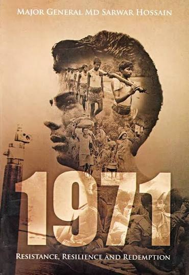
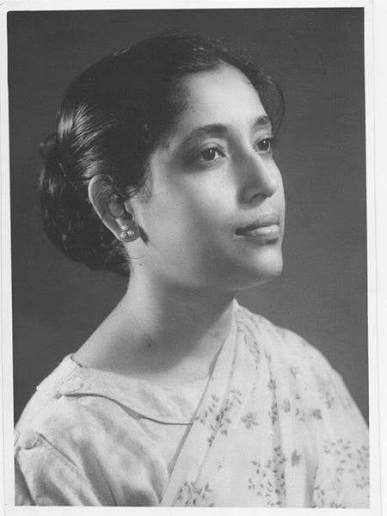
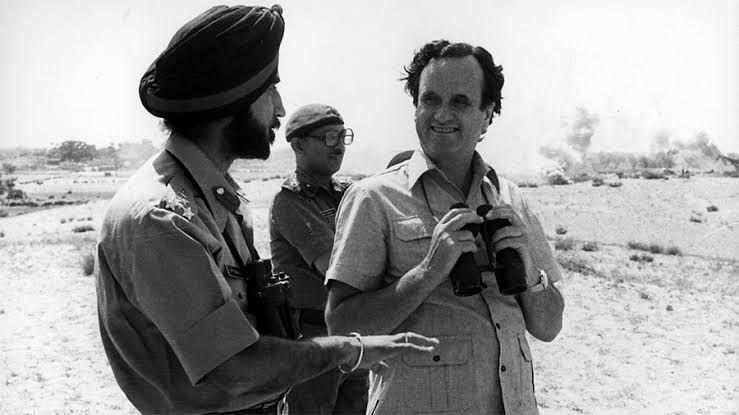

Explore a collection of recorded interviews with freedom fighters, eyewitnesses, refugees, journalists, medical professionals, and family members whose experiences preserve the history of the Bangladesh Liberation War of 1971.

Born: 1948
Birthplace: Dhaka
Occupation: Freedom Fighter
Interview Date: 15 March 2024
Duration: 42 Minutes
Language: Bangla
Sarwar Hossain recounts his participation in the Liberation War, describing military training, battlefield experiences, and the challenges faced by fellow freedom fighters. His testimony highlights the courage, sacrifices, and determination of those who fought for Bangladesh's independence.

Born: 1953
Birthplace: Khulna
Occupation: Teacher
Interview Date: 8 January 2024
Duration: 35 Minutes
Language: Bangla
Rahima Begum describes her family's displacement during the war, life in refugee camps, and the hardships faced by civilians. Her testimony provides valuable insight into the humanitarian impact of the Liberation War.

Born: 1953
Birthplace: Khulna
Occupation: Teacher
Interview Date: 8 January 2024
Duration: 35 Minutes
Language: Bangla
Rahima Begum describes her family's displacement during the war, life in refugee camps, and the hardships faced by civilians. Her testimony provides valuable insight into the humanitarian impact of the Liberation War.
Explore recorded interviews with freedom fighters, eyewitnesses, refugees, journalists, and other individuals whose personal experiences preserve the history of the Bangladesh Liberation War of 1971.
Recorded: 15 March 2024 | Duration: 42 Minutes
A firsthand account of military training, battlefield experiences, and the struggle for Bangladesh's independence.
Recorded: 08 January 2024 | Duration: 35 Minutes
Personal memories of displacement, refugee camps, and life during the Liberation War.